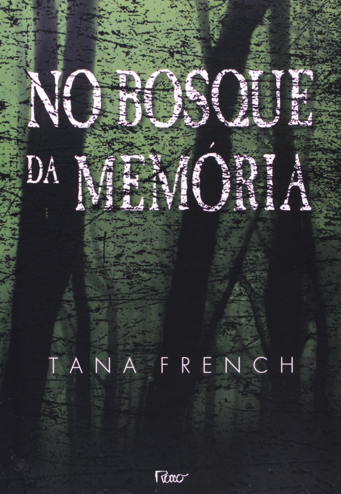
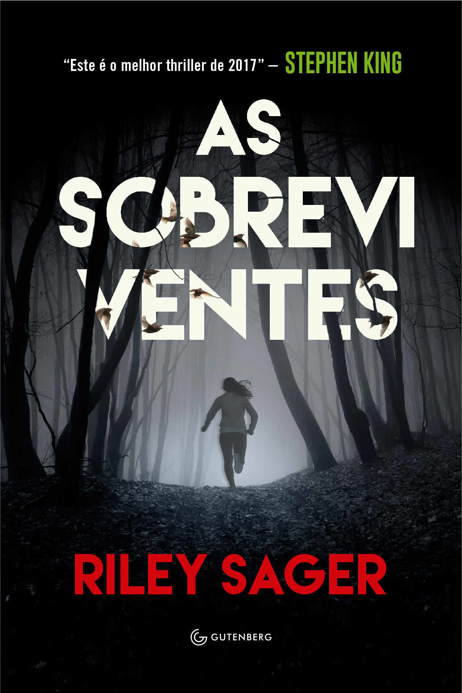
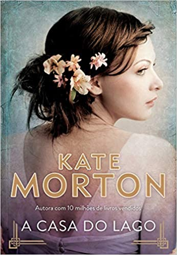

| Bem vindo a categoria de suspense, veja alguns livros: | |
|---|---|
|  |
No bosque da memóriaTana FrenchSinopse: Três crianças não voltam para casa ao fim de um dia de passeio na floresta de Knocknaree. Quando a polícia chega, apenas uma delas é localizada, banhada em sangue e paralisada de medo, incapaz de contar o que aconteceu. Seu nome: Adam Ryan. Vinte anos depois, o garoto é um detetive que mantém seu passado em silêncio até encontrar uma jovem sobrevivente na mesma floresta, em condições similares, dando início a uma macabra e surpreendente trama. Colocando o dedo em feridas nunca cicatrizadas, Ryan descobre que a solução do caso também significa o fim do mistério da tragédia envolvendo seus amigos na infância. Este é o mote de No bosque da memória, ambiciosa e extraordinária estreia da irlandesa Tana French na ficção. Ganhador do prêmio Edgar Allan Poe para livros de suspense, o título é comparado à impactante obra Sobre meninos e lobos, de Dennis Lehane. Saiba mais |
|  |
As sobreviventesRyler SagerSinopse: Há dez anos, a estudante universitária Quincy Carpenter viajou com seus melhores amigos e retornou sozinha, foi a única sobrevivente de um crime terrível. Num piscar de olhos, ela se viu pertencendo a um grupo do qual ninguém quer fazer parte: um grupo de garotas sobreviventes com histórias similares. Lisa, que perdeu nove amigas esfaqueadas na universidade; Sam, que enfrentou um assassino no hotel onde trabalhava; e agora Quincy, que correu sangrando pelos bosques para escapar do homem a quem ela se refere apenas como Ele. As três jovens se esforçam para afastar seus pesadelos, e, com isso, permanecem longe uma da outra; apesar das tentativas da mídia, elas nunca se encontraram. Saiba mais |
|  |
A casa do lagoKate MortonSinopse: A casa da família Edevane está pronta para a aguardada festa do solstício de 1933. Alice, uma jovem e promissora escritora, tem ainda mais motivos para comemorar: ela não só criou um desfecho surpreendente para seu primeiro livro como está secretamente apaixonada. Porém, à meia-noite, enquanto os fogos de artifício iluminam o céu, os Edevanes sofrem uma perda devastadora que os leva a deixar a mansão para sempre. Saiba mais |